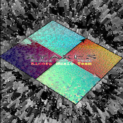
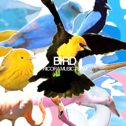

2010春以降
| イベント時期 | アルバム名 | 特設サイト | クロスフェード |
|---|---|---|---|
| 2019秋 | NEON SIGN | ||
| 2019秋 | Insomnia |
 |
|
| 2019春 | Gravity Zero |
 |
|
| 2018秋 | DROP OUT | ||
| 2018春 | Energy Drink |
 |
|
| 2017秋 | Riddle Colors of Rainbow |

|
|
| 2017春 | RICORITH |
 |
|
| 2016秋 | Apple Poetry |
 |
|
| 2016春 | VONИOW |
 |
|
| 2015秋 | マンメンミ | ||
| 2015春 | 春色セマンティック | ||
| 2014秋 | HISUS | ||
| 2014春 | Re:Quartz | なし | |
| 2013秋 | GARAM | niconico | |
| 2011春 | unscientist | なし | サンプル(mp3) |
| 2010秋 | P-rhythm | なし | サンプル(mp3) |
| 2010春 | Canal.rmt | なし | サンプル(mp3) |
2009年秋以前（ジャケットのみ）
| 2009 Autumn 1 Apollo |
2009 Autumn 2 Cynthia |
2009 Spring Nabla Plus Laplacian |
2008 Autumn Requalizer |
|  | |||
| 2008 Spring INFINITY |
2007 Autumn XY AXES |
2007 Spring Photon |
2006 Autumn wave |
|  | |||
| 2006 Spring TRAUM |
2005 MOON |
2005 WIND |
2005 BIRD |
| 2005 FLOWER |
2004 よろしく Final |
2003 YOROSHIKU VOL.2 |
2003 夜露死苦 |
| 2002 >Re-magic; |